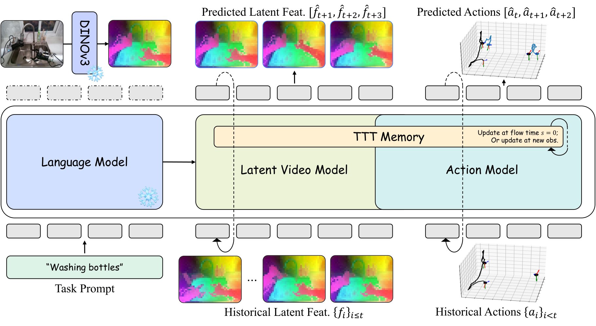
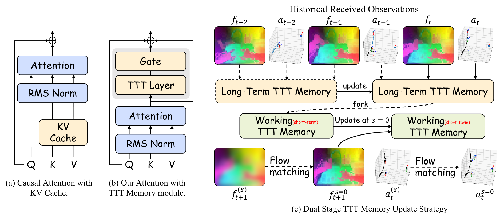
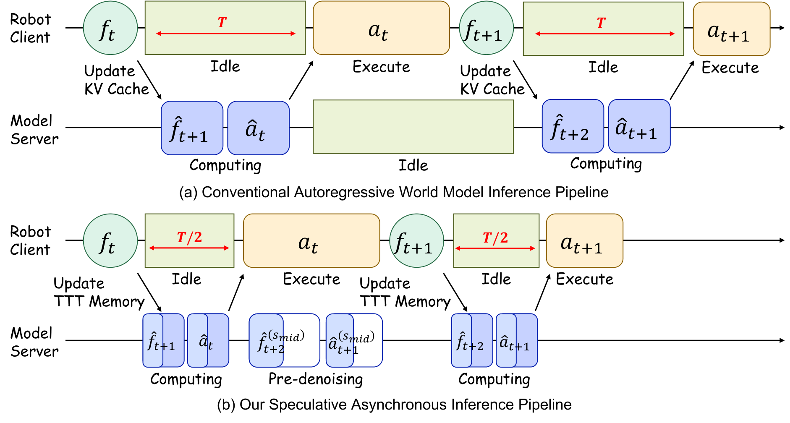
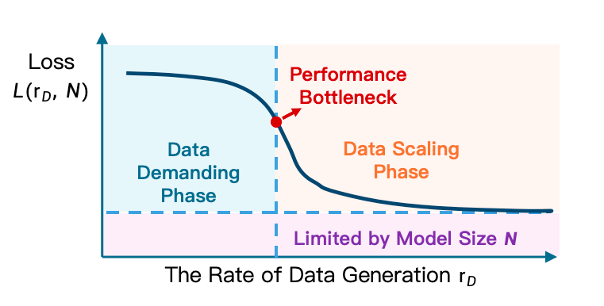
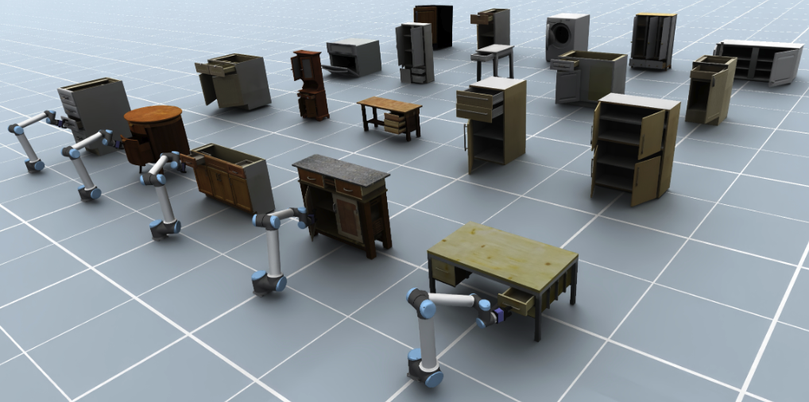

1. Quick overview of the paper
DexWorldModel proposes Causal Latent World Model (CLWM), with the goal of truly deploying the World-Action Model into robot execution. It changes future state generation from pixel/VAE latent to DINOv3 feature, uses Dual-State TTT Memory to replace the linearly growing KV cache, and uses Speculative Asynchronous Inference (SAI) to hide part of the denoising calculation in physical execution time. On the data side, EmbodiChain is proposed to replace limited static data sets with continuously generated physically credible simulation trajectories.
| What should the paper solve? | Existing WAM/VLA has three types of bottlenecks in robot deployment: future image reconstruction wastes capacity; the autoregressive history KV cache grows over time $\mathcal{O}(T)$; it must wait for real observations before reasoning, resulting in high closed-loop control latency. Another system bottleneck is that robot training data production is much slower than model capacity growth. |
|---|---|
| The author's approach | CLWM uses DINOv3 latent as the generation target, and MoT shares the video/action transformer backbone; Dual-State TTT Memory pushes history into MLP weights that are updated when testable; SAI uses predicted future semantics for background pre-denoising; EmbodiChain uses generative simulation, domain expansion, and ODS to continuously inject new trajectories. |
| most important results | The average success rate of RoboTwin is 94.00%, higher than $\pi_{0.5}$ 76.76%, X-VLA 72.84%, Motus 87.02%, and LingBot-VA 91.55%; the real two-arm zero-shot sim-to-real four tasks reach 95/90/80/65%, higher than using real teaching fine-tuning $\pi_0$ with GR00T N1.5; SAI reduces blocking latency by approximately 50%. |
| Things to note when reading | This article does not simply propose a policy, but a combined system of "model representation + long-term memory + inference scheduling + data generation infrastructure". The experimental conclusions are strong, but the cost of reproducibility is also extremely high: 64 H100, 20 days of training, and the EmbodiChain data engine are not lightweight conditions. |

2. Motivation and background
The paper starts from the "reactive" limitations of VLA: conventional VLA directly maps vision and language to actions, lacking explicit forward dynamics, so it is easy to confuse visual correlation with real physical cause and effect. World Action Models first predict the future world state, and then infer actions based on the future state, making action generation explicitly dependent on physical imagination.
The author believes that existing WAM is still stuck on three engineering bottlenecks. First, pixel/VAE latent future prediction will spend a lot of capacity reconstructing details such as lighting, background, and texture that are irrelevant to control. Second, long-term autoregression must maintain the KV cache, and the memory grows linearly with time. Third, the serial process of "executing actions, waiting for observation, and then reasoning" in real robot execution causes the control frequency to be slowed down by diffusion/flow matching sampling.
3. Preliminary knowledge
3.1 VLA and WAM
VLA maps current historical observations and language to future action blocks:
$$a_{t: t+K-1}\sim \pi_\theta(\cdot\mid o_{\le t}, l).$$
WAM is divided into two steps: forward visual dynamics and inverse/action dynamics:
$$\hat{o}_{t+1}\sim p_\theta(\cdot\mid o_{\le t}, a_{ $$a_t\sim g_\psi(\cdot\mid o_{\le t}, a_{ This split makes action generation no longer just reactive mapping, but a causal structure based on "what should I do if the world becomes like this next?" CFM uses ODE flow to transform from noise $\epsilon$ to target $x$: $$\frac{dx^{(s)}}{ds}=v_\phi(x^{(s)}, s\mid c), \quad x^{(0)}=\epsilon\sim\mathcal{N}(0, I).$$ If linear interpolation $x^{(s)}=(1-s)\epsilon+s x$ is used, the target speed is $\dot{x}^{(s)}=x-\epsilon$, and the training goal is: $$\mathcal{L}_{CFM}=\mathbb{E}_{s, \epsilon, x, c}\left[\|v_\phi(x^{(s)}, s\mid c)-\dot{x}^{(s)}\|^2\right].$$3.2 Conditional Flow Matching
4. Detailed explanation of CLWM method
4.1 DINOv3 Latent as world state
CLWM does not generate RGB, but uses frozen DINOv3 base model to extract latent feature map:
$$f_t=\Phi_{\mathrm{DINO}}(o_t)\in\mathbb{R}^{C\times H'\times W'}, \quad H'=H/P, \ W'=W/P, \ P=16.$$
This is similar to the idea of LDA-1B: put the future prediction target in a structured semantic space, reduce the pressure of background and texture reconstruction, and let the model capacity serve interactive semantics and object state transfer.
4.2 Mixture of Transformers
CLWM uses MoT: latent video model and action model share core transformer blocks, initialized from Wan2.2-5B; different modes are only independent in flow timestep embedding and input/output projection:
$$\phi_{vid}=\phi_{vid}^{out}\circ\phi_{share}\circ\phi_{vid}^{in}, \quad \phi_{act}=\phi_{act}^{out}\circ\phi_{share}\circ\phi_{act}^{in}.$$
The shared backbone forces visual latent and action learning to share environmental dynamics, while the projection layer preserves modal differences.
4.3 Two-stage autoregressive generation
Stage 1: Latent Video Flow Matching. Given the historical memory context $h_{\le t}$ and the language $l$, the video model denoises the noise $\epsilon_{vid}$ into the future DINO feature $f_{t+1}$:
$$\mathcal{L}_{video}=\mathbb{E}\left[\left\|v_{\phi_{vid}}(f_{t+1}^{(s)}, s\mid h_{\le t}, l)-\dot{f}_{t+1}^{(s)}\right\|^2\right].$$
Stage 2: Action Flow Matching. The action model decodes action chunks $a_t=\{a_{t, 1},..., a_{t, \tau}\}$, $\tau=16$, and the conditions include history, language, and Stage 1 predicted future semantics $\hat f_{t+1}$. In order to allow the action model to handle imperfect history, $p=0.5$ is used to inject noise into the historical latent during training, $s_{aug}\in[0.5, 1]$:
$$\tilde f_{\le t}=(1-s_{aug})\epsilon+s_{aug}f_{\le t}.$$
The action goals are:
$$\mathcal{L}_{action}=\mathbb{E}\left[\left\|v_{\phi_{act}}(a_t^{(s)}, s\mid\tilde h_{\le t}, l, \tilde f_{t+1})-\dot a_t^{(s)}\right\|^2\right].$$
4.4 Dual-State TTT Memory

The self-supervised task of the TTT layer is to reconstruct $\theta_V z_t$ using $\theta_K z_t$:
$$\ell_{self}(\mathcal{W}; z_t)=\|f(\theta_K z_t; \mathcal{W})-\theta_V z_t\|^2.$$
The output is obtained via query projection:
$$l_t=f_{TTT_{mlp}}(\theta_Q z_t; \mathcal{W}_t).$$
To stabilize fine-tuning, the TTT output is injected with gated residuals:
$$f_{TTT}(z_t; \mathcal{W}_t)=\tanh(\alpha)\otimes f_{TTT_{mlp}}(\theta_Q z_t; \mathcal{W}_t)+z_t, $$
Among them, $\alpha$ is initially 0.1. Long-Term TTT Memory is updated as real observations and actions arrive:
$$\mathcal{W}_t^{long}=\mathcal{W}_{t-1}^{long}-\eta\nabla_\mathcal{W}\ell_{self}(\mathcal{W}_{t-1}^{long}; h_t).$$
Fork out Working Memory when generating. The working memory is frozen during Stage 1 ODE; after obtaining $\hat f_{t+1}$, the working memory is immediately updated at $s=0$ and then used by Stage 2 action generation. In this way, the real history will not be polluted by the predicted state, and the context length will no longer cause linear growth of the KV cache.
4.5 Speculative Asynchronous Inference

SAI is a two-step process. In Phase 1, when the robot executes the current action chunk, the model uses the $\hat f_t$ predicted in the previous step as the surrogate observation, and pre-integrates the ODE from $s=0$ to $s_{mid}$. In Phase 2, after the arrival of the real $o_t$, the DINO feature $f_t$ is extracted, the long-term memory is updated, the speculative context is replaced with the real context, and then integrated from $s_{mid}$ to $s=1$. Since the action model has seen noisy history during training, the speculative denoising in the first half will not easily deviate.
5. EmbodiChain
EmbodiChain is the data engine of the paper. Its core argument is the Efficiency Law: in embodied learning, effective scaling depends primarily on the rate of generation of "fresh, diverse, physically valid experiences" during training, rather than static data set size. The author uses Experience Throughput $\mathcal{E}$ to describe the unique state-action pairs ingested in each training iteration; under a fixed compute $C$ and parameter $P$, intelligence will grow effectively only when $\mathcal{E}$ exceeds the threshold $\tau(C, P)$.

5.1 Generative Simulation
- Asset generation and optimization: After using the generative model to generate 3D meshes, optimize the geometry, scale, coordinate system, mass distribution, friction coefficient, collision attribute, grasp pose and affordance, and output USD assets with physical/semantic metadata.
- Scene layout synthesis: Generate scene layout and place task-related foreground objects within the robot's reachable work area; background assets avoid penetration through gradient optimization to ensure freedom of collision.

5.2 Domain Expansion
- Reachability-aware sampling: Sampling candidate robot states in the reachable workspace, maximizing differences according to task-centric features such as end approach direction, contact geometry, interaction results, etc., to avoid trajectory homogeneity.
- Closed-loop error recovery: When failures such as slipping, grasping misalignment, and out-of-bounds failure occur, replanning generates corrective trajectories, and the recovery sequences are re-labeled and incorporated into the data.
- Visual augmentation: Online sampling of visual factors such as lighting temperature, BRDF, sensor drift, etc., and using smooth random processes to ensure temporal consistency.
- Physics-grounded generation: Domain expansion does not perform unconstrained randomization, but keeps the multi-body structure, mass, friction and joint parameters physically consistent.
5.3 Online Data Streaming
ODS is a storage-less online pipeline: simulation and generation workers write asynchronously to the lock-free circular buffer of CPU/GPU VRAM, and learner workers consume batches through zero-copy. Data can be reused in a limited manner to amortize the generation cost, but the number of replays will be strictly controlled to prevent the buffer from becoming a static data set.
6. Key points for experimental reproducibility
6.1 Data and training
| stage | settings |
|---|---|
| Pretraining Data | Open source robot operation data such as RoboMind, Agibot World Beta, InternData-A1, etc. |
| Video representation | DINOv3 base, patch size $P=16$ |
| Action representation | LingBot-VA style unified action; both arms $((7\mathrm{DoF\ EEF}+7\mathrm{joint}+1\mathrm{gripper})\times2)=30$ dimension |
| Post-training | Completely relies on EmbodiChain to generate data and does not manually collect downstream real-world demos |
| Optimizer | AdamW, lr $1\times10^{-4}$, global batch 128, about 20 epochs |
| Compute | 64 NVIDIA H100 GPUs, continuous training for about 20 days |
| RoboTwin finetune | 25, 000 synthetic trajectories, 40k iterations, lr $1\times10^{-5}$ |
6.2 RoboTwin main results
The average success rate of CLWM on RoboTwin's multiple dual-arm tasks is 94.00%, which is higher than $\pi_{0.5}$ 76.76%, X-VLA 72.84%, Motus 87.02%, and LingBot-VA 91.55%. Tasks with obvious advantages include Blocks Ranking Size 97% vs LingBot-VA 96%/Motus 63%, Handover Block 80% vs 78%/73%, Hanging Mug 40% vs 28%/38%, Place Mouse Pad 98% vs 96%/68%, Turn Switch 65% vs 44%/78% (Motus is higher than CLWM here).
| Method | Average Success |
|---|---|
| $\pi_{0.5}$ | 76.76% |
| X-VLA | 72.84% |
| Motus | 87.02% |
| LingBot-VA | 91.55% |
| CLWM | 94.00% |
6.3 EmbodiChain ablation
| Configuration | ID Success | OOD Success |
|---|---|---|
| Spatial Randomization Only | 64% | 25% |
| + Visual Augmentation | 75% | 42% |
| + Physics-grounded Generation | 81% | 56% |
| + Reachability-aware Sampling | 95% | 82% |
| Training Configuration | Hanging Mug | Turn Switch | Stack Bowls |
|---|---|---|---|
| Static Baseline (1, 500 demos) | 62% | 85% | 88% |
| ODS sample 213 | 60% | 84% | 85% |
| ODS sample 50 | 92% | 92% | 96% |
| ODS sample 10 | 96% | 98% | 98% |
This set of experiments supports the Efficiency Law: when the online data replay bound drops from 213 to 50/10, single trajectory reuse decreases, fresh experience throughput increases, and the success rate increases significantly.
6.4 Zero-shot Sim-to-Real
The real platform is the Agilex CobotMagic bimanual platform. CLWM and Sim2Real-VLA are trained using only EmbodiChain simulation data; $\pi_0$ and GR00T N1.5 are fine-tuned using 50 real expert demos per task.
| Methods | Dual-Arm Water Pouring | Table Rearrangement | Items Hand-Over and Place | Pan Open and Place |
|---|---|---|---|---|
| $\pi_0$ | 25% | 20% | 20% | 5% |
| GR00T N1.5 | 35% | 20% | 15% | 5% |
| Sim2Real-VLA | 80% | 80% | 40% | 35% |
| CLWM | 95% | 90% | 80% | 65% |
7. Discussion and limitations
7.1 The most valuable part of this paper
The most valuable thing is to split the world model deployment bottleneck into four layers and process them simultaneously: the representation layer uses DINOv3 latent to avoid pixel reconstruction; the memory layer uses TTT to replace the KV cache; the reasoning layer uses SAI to overlap calculation and physical execution; the data layer uses EmbodiChain to provide continuous experience flow. This combination is closer to real robotic system needs than single point model improvements.
The second value is to clearly present the data throughput perspective of embodied scaling. While many robotics papers understand "more data" to mean larger static data sets, this paper emphasizes fresh, physically valid, and failure-recoverable online data streams.
7.2 Why the results hold up
- The main tasks cover a wide range of areas: RoboTwin lists nearly 50 dual-arm/object manipulation tasks, with an average success rate higher than multiple strong baselines.
- Ablation corresponds to system claim: Each time a module is added to domain expansion, ID/OOD increases; the lower the number of ODS replays, the higher the success rate, which directly verifies the Efficiency Law.
- The conclusions of the real mission are impactful: CLWM zero-shot sim-to-real exceeds $\pi_0$/GR00T N1.5 fine-tuned with real teaching, indicating that data generation and latent characterization indeed alleviate the virtual-real gap.
7.3 Limitations
The threshold for recurrence is extremely high: 64 H100 for about 20 consecutive days, plus EmbodiChain data infrastructure, well beyond typical lab resources.
Architectural contribution coupling is strong: DINO latent, MoT, TTT, SAI, and EmbodiChain appear at the same time. Although there is ablation on the data side, the ablation information alone on the model side is insufficient.
The number of real tasks is limited: Results for the four-arm task were strong, but not sufficient to demonstrate generalization to all open real-world scenarios.
Appendix not actually entered: `sections/8_appendix.tex` is commented out in the source code, and no more model-side hyperparameters, real hardware details or failure cases are provided.
8. Questioning at the group meeting
Q1: Why is DINOv3 latent more suitable for WAM than VAE/pixel?
DINOv3 latent prefers object semantics and spatial structure, weakening texture, lighting and background. The goal of WAM is control, not video quality; using DINO latent can focus the generation capacity on the evolution of interactive semantics.
Q2: Why can TTT Memory achieve O(1)?
It does not save the growing historical token/KV cache, but pushes the history into the dynamic weight $\mathcal{W}$ of TTT-MLP through inner-loop gradient update. The weight scale is fixed, so the space complexity does not increase with time.
Q3: Why should we distinguish between Long-Term and Working Memory?
Long-Term only absorbs real observations and executed actions, keeping the physical history anchor; Working comes out of the Long-Term fork and can absorb the predicted $\hat f_{t+1}$ as the action generation context, but it will not pollute the real history.
Q4: Will SAI perform pre-denoising in vain because it predicts the future wrong?
There will be this risk. The author uses history augmentation to train the action model to handle noisy/imperfect history, and uses Long-Term Memory to calibrate it after the real observations arrive, leaving only the remaining fine-grained denoising. The effectiveness of SAI relies on the predicted latent not deviating too much from the true latent.
Q5: Isn't the core of EmbodiChain domain randomization?
Not simple randomization. It includes physically constrained asset/scene generation, reachability-aware sampling, fail-resilient trajectory reflow, time-consistent visual enhancement, and ODS streaming training. The focus is on "continuous physical effective experience throughput", not static random data volume.
9. reproducibility information
9.1 Resource links
- arXiv: https: //arxiv.org/abs/2604.16484
- DexForce PDF: https: //dexforce.com/docs/DexWorldModel.pdf
- EmbodiChain project: https: //dexforce.com/embodichain/index.html
- EmbodiChain GitHub: https: //github.com/DexForce/EmbodiChain
9.2 Training Shorthand
Visual target: DINOv3 base latent, patch size P=16
Backbone: Mixture of Transformers initialized from Wan2.2-5B
Action chunk: tau = 16
Action dim: dual-arm 30D = (7 EEF + 7 joints + 1 gripper) * 2
TTT Memory: TTT-MLP, 4x expansion, GELU, alpha init 0.1
History augmentation: p = 0.5, s_aug in [0.5, 1]
Pretraining: AdamW, lr 1e-4, global batch 128, about 20 epochs
Compute: 64 H100 GPUs, about 20 days
RoboTwin finetune: 25k synthetic trajectories, 40k iters, lr 1e-59.3 Coverage check
This report covers Abstract, Introduction, Preliminaries, Causal Latent World Model, EmbodiChain, Experiments, and Conclusion. `sections/8_appendix.tex` is commented in the source code, and no actual appendix text has been found to be integrated; the relevant implementation details have been integrated from the text long sections and tables into the methods, data and experimental chapters.
Generation date: 2026-05-09. The source code, PDF and unzipped directories are retained for subsequent verification.